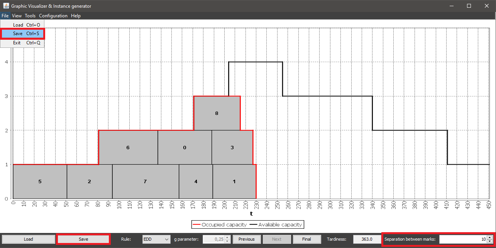
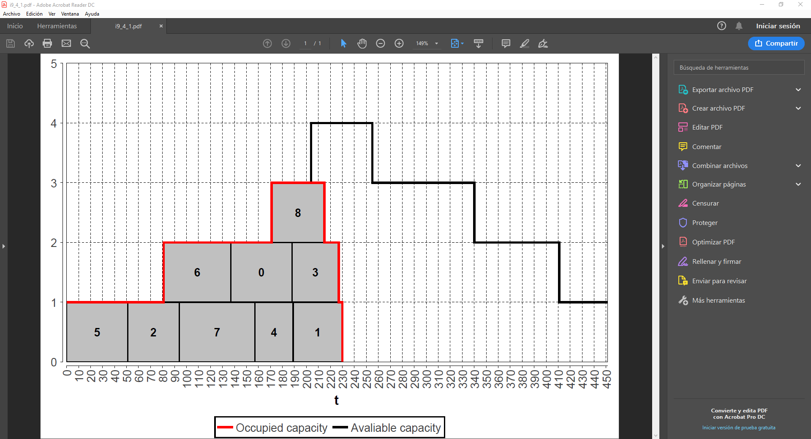
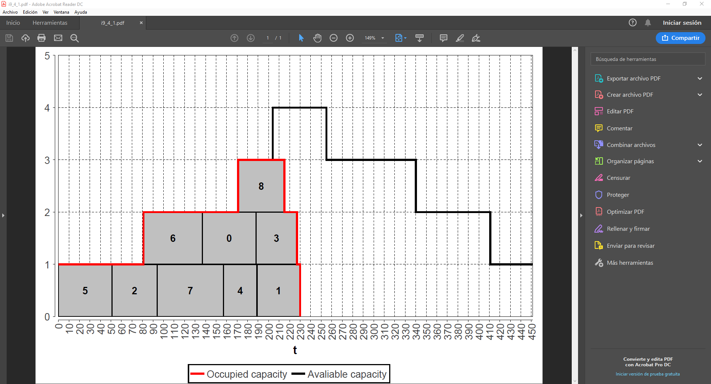

To save an instance it's neccesary to have an instance loaded in the application. Once this is aquired you can access the instance save system by one of these options:
You can also modify the numeric value specified next to the Separation between marks label to choose which separation between graduation marks you want to save the instance with.
Once you access the option, a dialog will be displayed where you can navigate through your folders to choose the name of the file to save (it's not required to specify the extension, the system will automatically add the PDF extension to the file). Generated file can be opened with any software that supports PDF.
 
